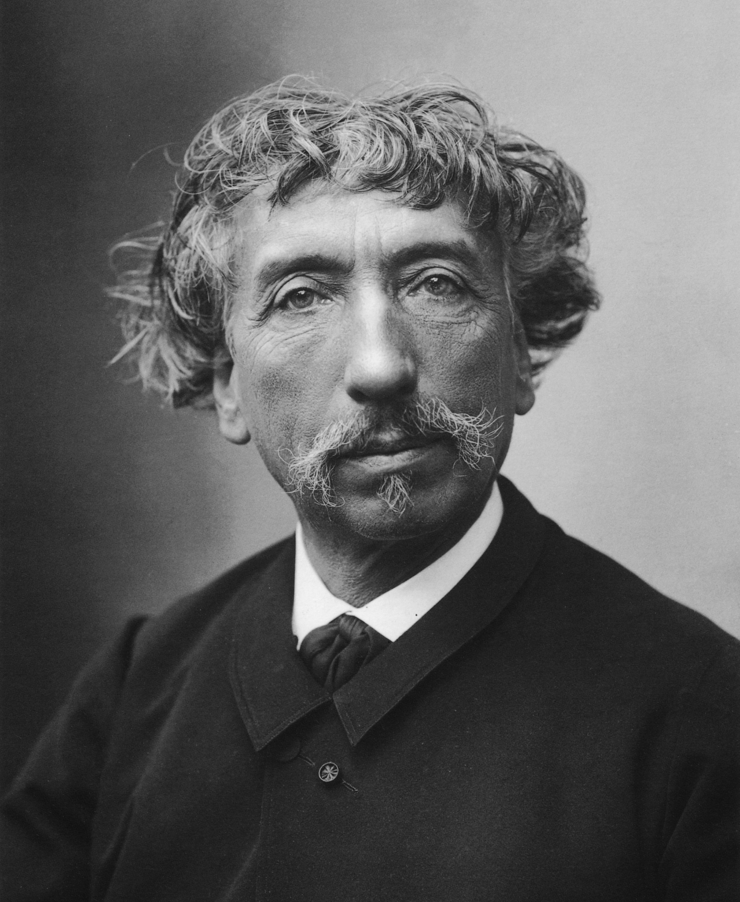

ON PARIS
The proposed tower had been a subject of controversy, drawing criticism from those who did not believe it was feasible and those who objected on artistic grounds. These objections were an expression of a long-standing debate in France about the relationship between architecture and engineering. It came to a head as work began at the Champ de Mars: a "Committee of Three Hundred" (one member

for each metre of the tower's height) was formed, led by the prominent architect Charles Garnier and including some of the most important figures of the arts, such as Adolphe Bouguereau and Jules Massenet. A petition called "Artists against the Eiffel Tower" was sent to the Minister of Works and Commissioner for the Exposition, Charles Alphand, and it was published by Le Temps on 14 February 1887:
We, writers, painters, sculptors, architects and passionate devotees of the hitherto untouched beauty of Paris, protest with all our strength, with all our indignation in the name of slighted French taste, against this useless and monstrous Eiffel Tower […] Imagine for a moment a giddy, ridiculous tower dominating Paris like a gigantic black smokestack, crushing under its barbaric bulk Notre Dame, the Louvre, the Dome of les Invalides, the Arc de Triomphe, all of our humiliated monuments will disappear in this ghastly dream. We shall see stretching like a blot of ink the hateful shadow of the hateful column of bolted sheet metal.
Gustave Eiffel responded to these criticisms by comparing his tower to the Egyptian pyramids: "My tower will be the tallest edifice ever erected by man. Will it not also be grandiose in its way? And why would something admirable in Egypt become hideous and ridiculous in Paris?" These criticisms were also dealt with by Édouard Lockroy in an ironic letter of support for the artists, where he condemned the efforts as moot since construction had already begun and the matter decided.

47